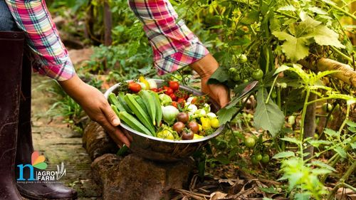

Organic Farming Business Plan: What Do You Need To Start
Key Takeaways:
Concerns about the use of chemicals in agriculture have impacted people's lives in various ways. Many individuals are now paying closer attention to the food they eat, wanting to make healthier choices. This has led to an increase in the consumption of organic products, which are grown without synthetic chemicals.
In India, organic farming has become increasingly popular over the past decade as more people focus on maintaining their health. In this guide, we will cover topics such as what is organic farming and an organic farming business plan that will help you start your organic farm. Let’s get started.
What is Organic Farming?
The appeal of organic farming is simple: it promises to provide food that is free from harmful chemicals, which can have positive effects on our health. As a result, both the demand for organic produce within the country and its exportation have grown rapidly. Entrepreneurs are also taking notice of this trend, attracted by the government's support and the industry's commitment to healthy practices. With more and more people becoming aware of the importance of a healthy lifestyle, the future of organic farming in India looks promising and profitable for those who choose to invest in it.
How to Make an Organic Farming Business Plan: Step-by-Step Guide
Step 1: Get Organic Certification
Obtaining organic certification is a crucial step in starting your organic farming business. Here's how to proceed, depending on whether you aim to export your produce or cater to the domestic market:
1. For Exporting Produce:
India Organic Certificate: This certificate, issued by The Agriculture and Processed Food Products Export Development Authority (APEDA), is internationally recognized and allows you to export your organic produce. The certification is based on the National Programme for Organic Production (NPOP).
Application Process:
2. For Domestic Market:
PGS Organic Certificate: This free certificate, provided through regional councils under the Ministry of Agriculture and Farmers Welfare, allows you to supply organic produce within India.
Application Process:
Other Licenses You Might Require
To legally operate an organic farming business in India, you'll need a few important licenses:
Step 4: Fertilizer Application, Pest & Disease Management
Use organic fertilizers and pesticides to avoid adverse effects on the environment and human health. Here are some methods:
Step 5: Harvesting and Marketing
Once your crops are ready, harvest them and use the identified market channels to sell your produce.
With careful planning and research, you'll be well on your way to starting a successful organic farming business.
Funding
Initial funding requirements for starting an organic farming venture in India typically range between ₹5 lakhs and ₹10 lakhs.
The government assists the National Bank for Agriculture and Rural Development (NABARD) in the form of capital investment subsidies for organic farming:
Membership in Various Organic Farming Groups
Becoming a member of different organic farming groups can boost your farming efforts. One important group to consider is part of the National Project on Organic Farming, set up by the government. This project has its main office in Ghaziabad, with additional support centers in Bangalore, Nagpur, Panchkula, Patna, Bhubaneswar, Imphal, and Jabalpur.
You can pick a nearby center and reach out to them for help. These centers are there to guide you on using biological methods to improve your farming. They can offer training and support, teaching you about quality standards, the latest technology, and where to get the right equipment. During training, you'll learn about different types of fertilizers and why it's important to test certain cultures before using them on your farm. Joining these groups can give you a real edge in your organic farming journey.
Conclusion
There’s a growing demand for organic products, and this trend shows that organic farming has a bright future in India. States like Maharashtra, Madhya Pradesh, and Rajasthan are leading the way, offering great opportunities for new organic farmers. However, creating a proper organic business plan before you start is crucial. The profit margins are also quite attractive, ranging from 22% to 35% of what you earn. This makes organic farming a promising and profitable business to get into.
FAQs - Organic Business Plan
1. Is organic farming a profitable business?
Yes, organic farming can make good money because more people want food that's grown without chemicals. Organic products often sell for higher prices, and there are government programs that help farmers start and maintain organic farms. If you understand how to farm organically and have access to markets where people buy organic food, you can do well, but if you don’t, you'll need a comprehensive organic farming business plan. Even though it costs money to get certified as organic and can be hard work to manage pests naturally, the higher prices and loyal customers can make it a very profitable business.
2. How to start a business of organic farming?
To start an organic farming business, begin by learning about organic farming methods and successful practices. Find good land with healthy soil and water access, and get the necessary licenses and certifications. Make a simple organic farming business plan with your goals and target customers. Improve the soil with compost, buy the needed equipment and seeds, and start planting crops that grow well in your area. Sell your products to local markets, grocery stores, and online. Join organic farming groups for support and advice. Keep an eye on your crops, record your activities, and keep improving your methods to make sure your farm stays productive and sustainable.